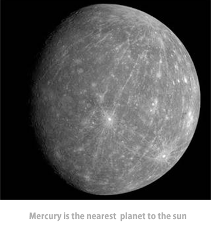

Mercury orbits closest to the Sun of all the planets, at an average distance of approximately 58 million km (about 36 million mi). The planet’s diameter is 4,879 km (3,032 mi), and its volume and mass are about one-eighteenth that of Earth.
Mercury’s mean density is approximately equal to that of Earth and is higher than that of any of the other planets. The force of gravity on the planet's surface is about one-third of that on Earth's surface or about twice the surface gravity on the Moon.
Mercury revolves once about the Sun every 88 days. Radar observations of the planet show that it rotates only once every 58.7 days, two-thirds of its period of revolution. Only three of the planet’s days, therefore, occur during every two of its years. The side facing the Sun gets very hot, while the side facing away quickly cools to frigid temperatures.
The point in Mercury's orbit at which the planet is closest to the Sun (called the planet’s perihelion) moves a tiny amount every orbit, too much to be accounted for by the gravitational influence of other planets. The observation of these changes in Mercury's perihelion was one of the first confirmations of Einstein’s theory of relativity, which predicted their existence.
Mercury’s high density indicates that the relatively dense and abundant element iron accounts for a large proportion of the planet’s composition. The surface of Mercury, however, contains little iron, suggesting that most of Mercury’s iron is now concentrated in a large iron core. Collisions with other protoplanets early in the history of the solar system may have stripped away much of Mercury’s low-density crust, leaving behind a dense, iron-rich core.
